Stone patios, walls and steps.
Laid by hand for homes in Mount Airy and across Surry County. Tell me what you have in mind and I will come look at the spot.
Monday to Friday, 7 to 5. Saturday visits by appointment.
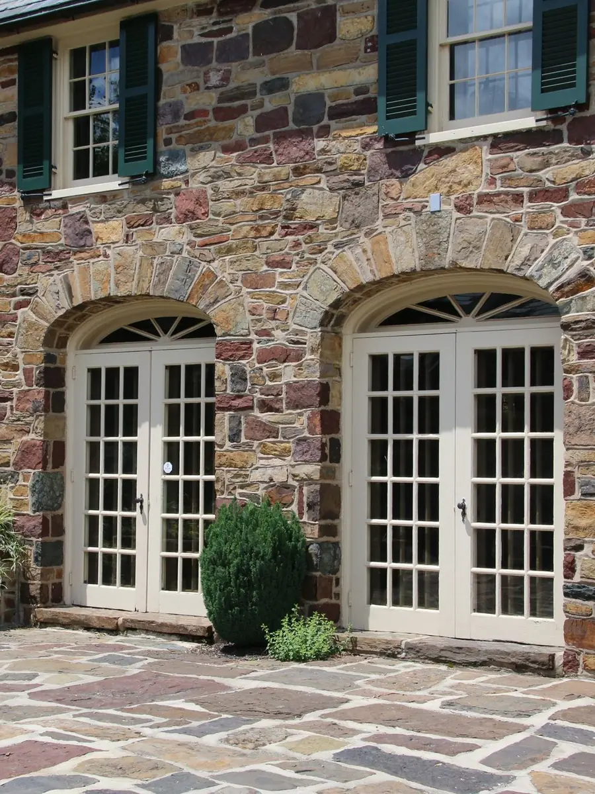
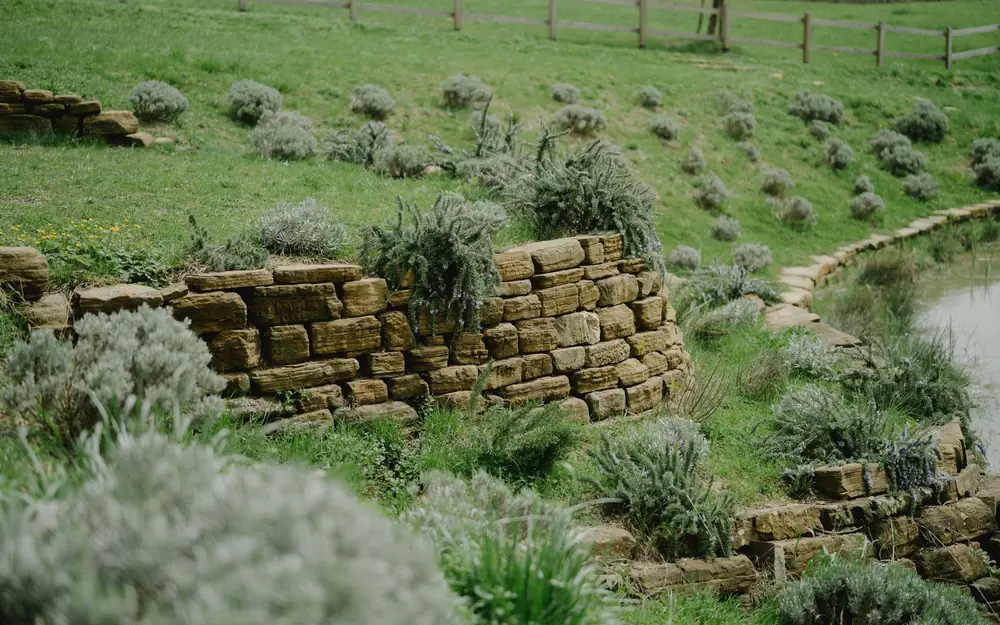
Walls, steps, patios, fire pits. Each one starts with a packed base and drainage behind the stone, then every piece is set by hand.
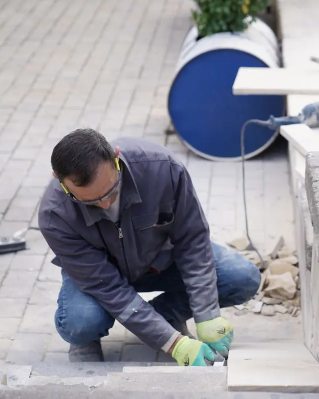
Why Stonecrop. It is a small plant that can take root in the cracks of an old stone wall and live on very little soil, which is the whole idea.
What I build
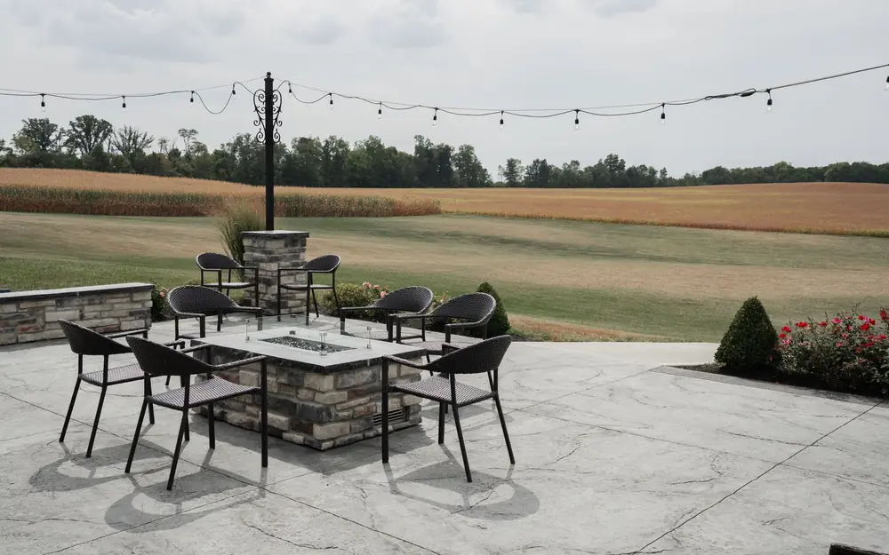
PatiosFlagstone, fieldstone and pavers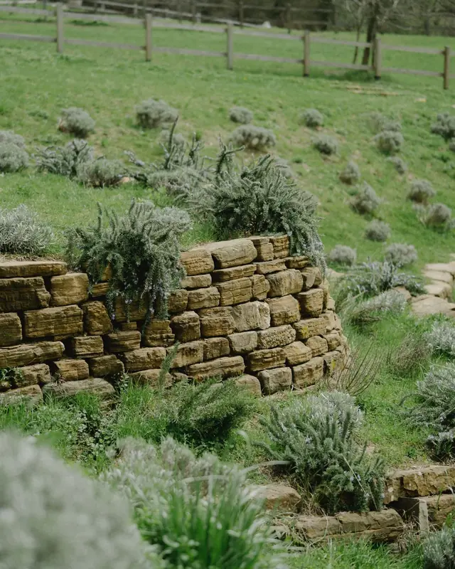
Retaining wallsDry stacked or mortared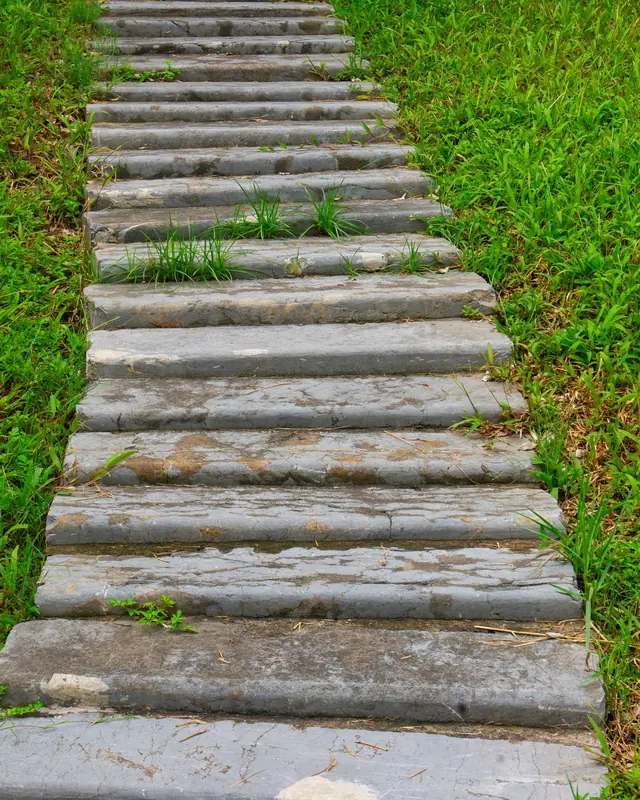
Steps and walkwaysSet on a packed base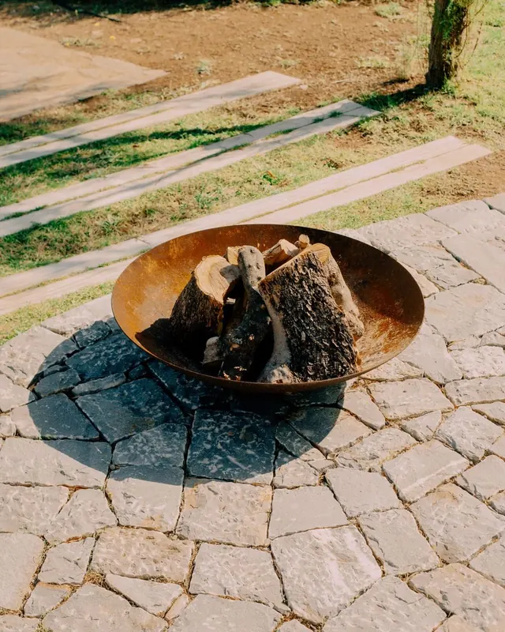
Fire pitsAnd seat walls to matchPlus repairs: sunken patios reset, leaning walls rebuilt, loose steps reset.
How a job goes
You call or text
Tell me what you have in mind. A photo of the spot helps.
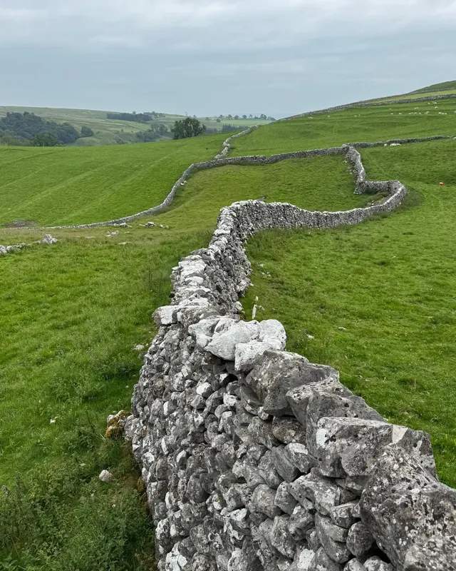
I walk the yard
I look at the slope, the soil and where the water goes, then measure.
The price
You get a price for the whole job, with the stone, the base, hauling and cleanup in it.
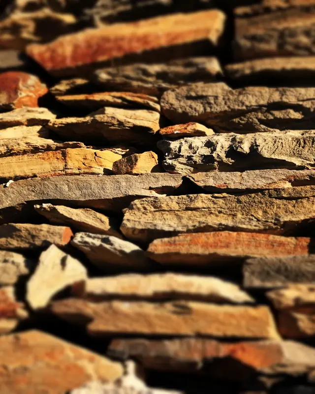
Dig and base
I dig out, lay fabric and pack crushed stone in layers. Nobody sees this part, but the stone sits on it.
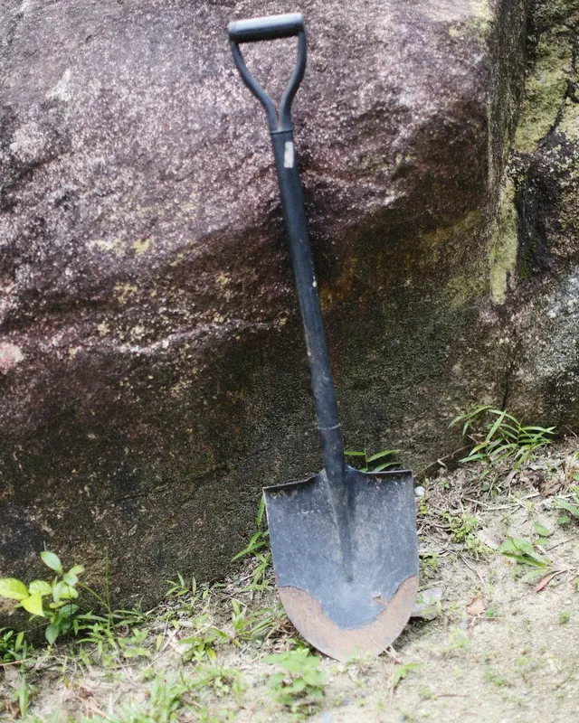
Stone goes down
Each piece is fitted and leveled by hand. Walls get drain pipe and clean gravel behind them.
Clean up and walk through
I haul off the dirt and scraps, sweep the joints and walk the finished work with you.
Photos of stonework
Patios, walls, steps and fire pits, each set by hand. These are example photos for this sample site.
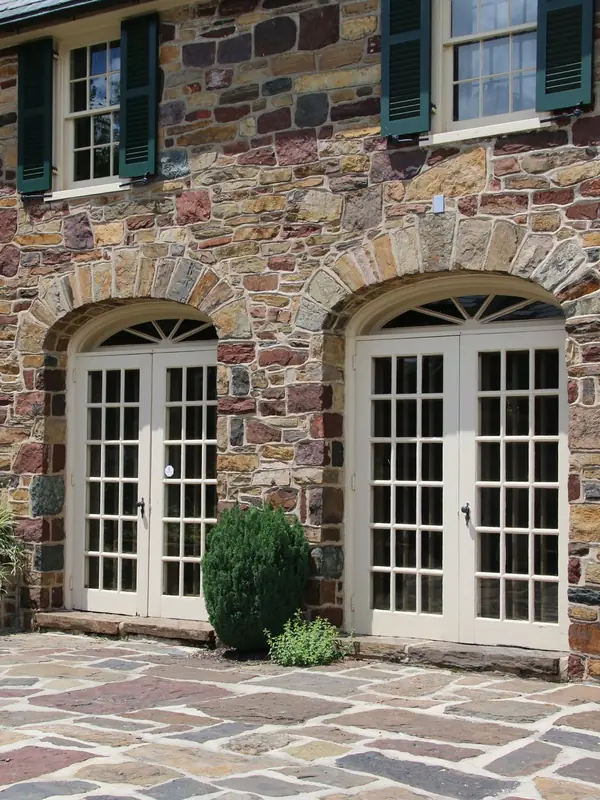
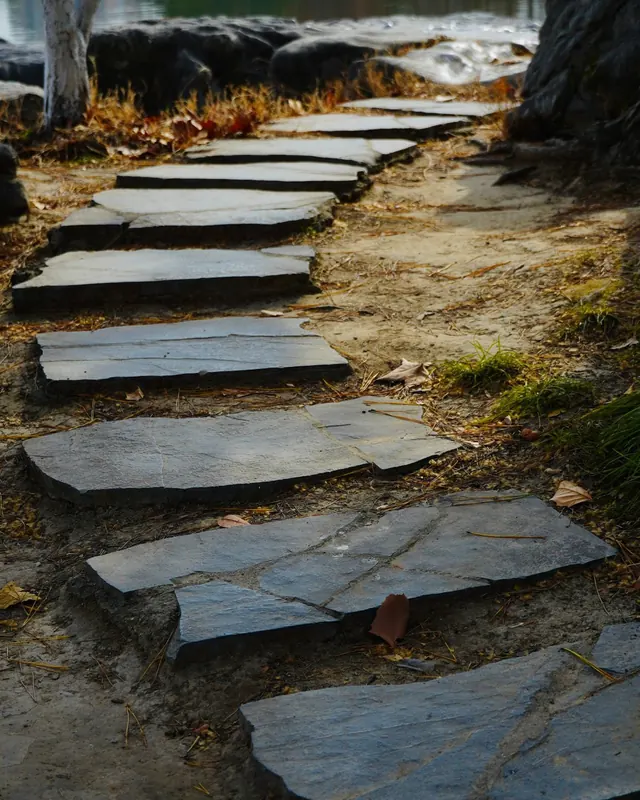
Every yard is different, so every job is priced after I see it.
I work within an hour of Mount Airy.
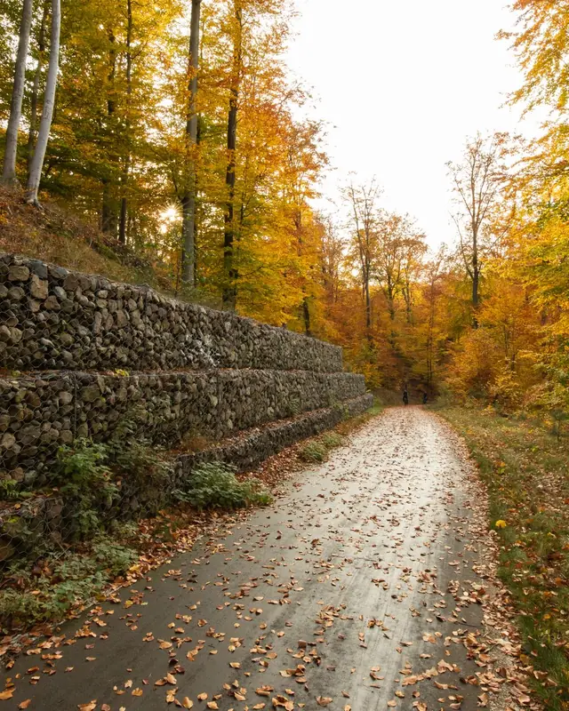
- Home baseMount Airy0 min
- Close byArarat15 min
- Close byPilot Mountain20 min
- Close byLowgap20 min
- A short driveDobson20 min
- A short driveWestfield25 min
- A short driveElkin35 min
- A short driveKing35 min
- Further outRest of Surry CountyAsk me
Before you call
- Based in Mount Airy, NC
- Monday to Friday, 7 to 5. Saturday visits by appointment.
- Patios, walls, steps, fire pits and repairs
Can you fix a wall someone else built?
Yes. Leaning walls get rebuilt and sunken patios get reset. I tell you which it needs after I see it.
How long does a patio take?
It depends on the size, the ground and the weather. You get a day count along with the price.
Do you work through the winter?
Yes, until the ground freezes. Mortar needs days above 40 degrees, so I plan dry stone and base work for the cold stretches.
What stone do you use?
Fieldstone, flagstone and granite, picked to suit the house. I bring samples so you can choose.
Do you haul away the dirt?
Yes. Digging out, hauling and cleanup are part of the job.
Does a retaining wall need a permit?
Tall walls can need an engineer and a permit. I tell you at the visit if yours does, so you can check with the county.
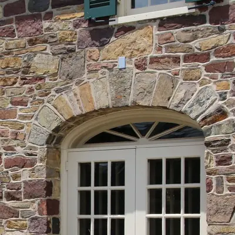
Ask about your project
Send a photo of the spot and a rough size. I will tell you what it takes.